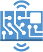
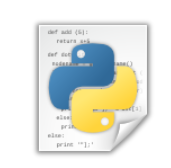
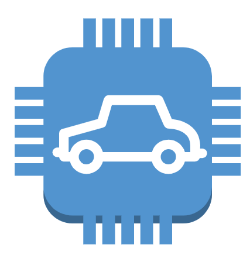

Keep in mind that the overall architecture is in the context of PEI 2019 and meets the needs of Instituto de Telecomunicações and so has as objective revitalize and put into operation the AMazING project with more features for the needs of experiences. Your overall design may be different.
LDAP (Lightweight Directory Access Protocol) is a service where users information like username, password, phone number can be stored and used to do authentication.
As you can see in the image above the architecture can be divided in 2 sides, left and right, with the left side being more oriented to hardware and right side software oriented.
SwitchA switch supporting SDN, in our case an Aruba 2920 48G POE+ (J9729A) switch, that will be the central point of all architecture. |
|  |
NodePiece of equipment based on an APU Board, with two wi-fi network adapters and four wi-fi antenas, connected to a PoE splitter. This ones inside a plastic box with a protective layer of naval wood on top for better protection. |
|  |
DaemonSoftware running in the background of the node OS (Operating System). |
|  |
Mobile NodeA node that is inside a mobile robot wich moves around the rooftop. This one is outside of PEI context since it is done as a master thesis of Eletronic Engineering. |
Node Configuration AppAn app with a simple interface for client to remotely configure nodes. In our case it is only possible if using IT credentials. |
Switch Controller AppAn app that allows system manager to remotely enable or disable PoE switch ports. |
Note that both Node REST Server and Daemon are software components, but appear in hardware layer since they run on Nodes.
Any APU board that can run unix server distros, Ubuntu Server 18.04 LTS in our case
Uses a PoE splitter for power supply that comes from switch.
Needs to be protected if installed outside.
A switch supporting SDN
OpenFlow and Aruba REST API installed
Any browser to run both the Node Configuration and Switch Controller Apps.
To configure Nodes:
The user must login to the Node Configuration App using his IT credentials in order to have access and to make changes to the nodes. After this the user can work with the interface to send commands to the node thus changing it's configuration.
To configure Switch:
The user must login to the controller using his manager credentials in order to have access and to make changes to the switch. After this the user can work with the interface to send commands to the switch enabling or disabling PoE ports.